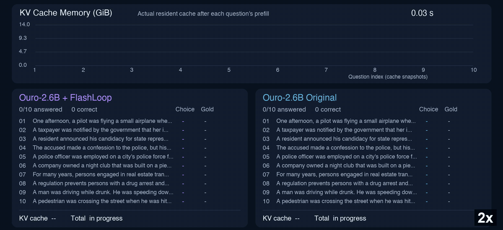
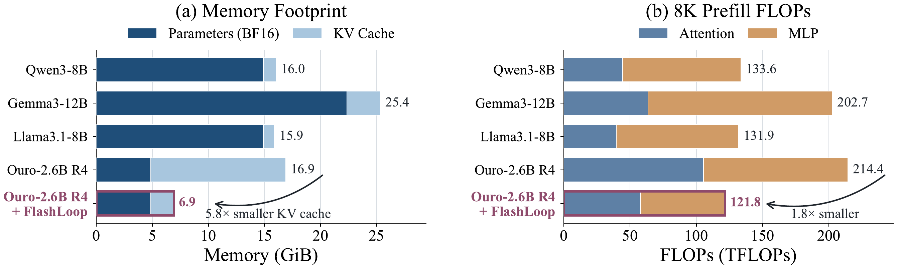
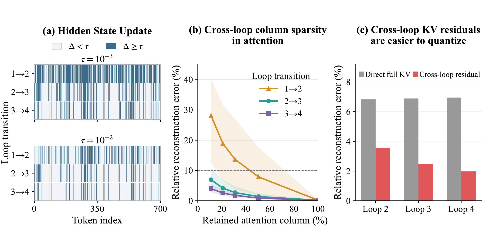
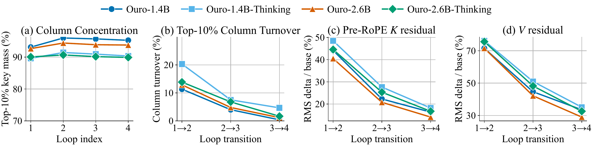
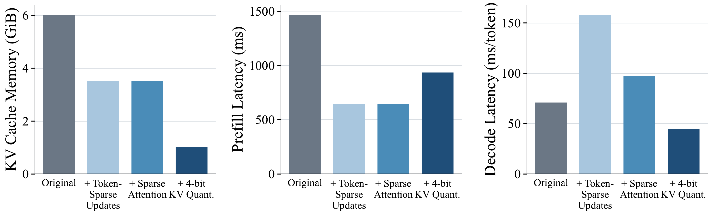
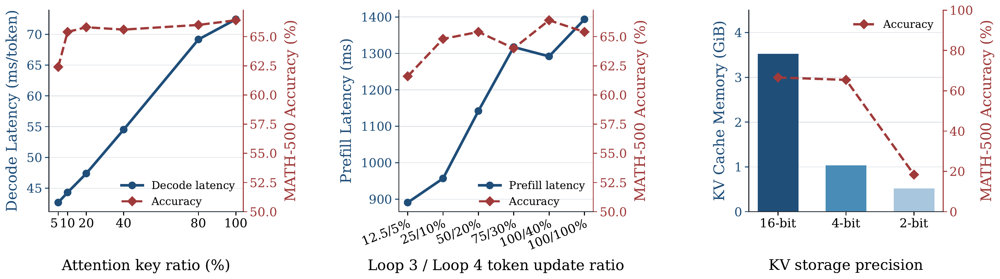
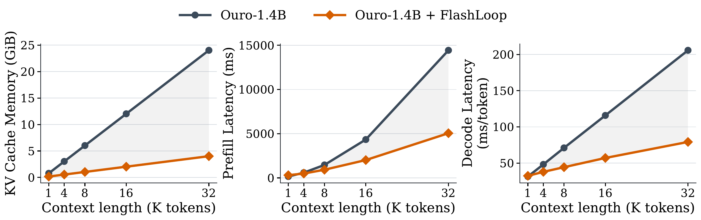
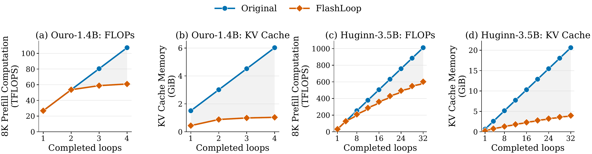

Cross-Loop Token-Sparse Updates
FlashLoop selectively updates only the tokens that remain active across loops.
a training-free inference framework that reduces cross-loop redundancy through token-sparse updates, sparse attention, and KV-residual quantization
1 Max Planck Institute for Intelligent Systems · 2 ELLIS Institute Tübingen · 3 Tübingen AI Center

Quick Start
pip install flashloop
flashloop-build-kernelsimport torch
from transformers import AutoTokenizer, AutoModelForCausalLM
from flashloop import FlashLoopEngine
model_path = "/path/to/Ouro-1.4B"
tokenizer = AutoTokenizer.from_pretrained(model_path, trust_remote_code=True)
input_ids = tokenizer.apply_chat_template(
[{"role": "user", "content": "What is the capital of France?"}],
tokenize=True, add_generation_prompt=True, return_tensors="pt",
).cuda()
# Optimized engine.
engine = FlashLoopEngine.from_pretrained(model_path)
output_ids = engine.generate(input_ids, max_new_tokens=64)
print(tokenizer.decode(output_ids[0, input_ids.shape[1]:], skip_special_tokens=True))
del engine
torch.cuda.empty_cache()FlashLoop selectively updates only the tokens that remain active across loops.
FlashLoop uses the preceding loop to identify a small subset of columns for recomputation.
FlashLoop therefore represents the KV cache as a quantized base state followed by quantized residual updates across loops.
FlashLoop substantially reduces both computation and KV-cache memory for looped Transformers.

Cross-Loop Redundancy in Looped Transformers
As recurrence progresses, changes between adjacent loops become increasingly sparse, predictable, and compressible.
Updates to most token states become increasingly small, with only a small fraction of token rows accounting for the majority of changes in hidden states and KV representations.
Cross-loop differences in attention outputs are dominated by a sparse subset of columns whose indices can be reliably predicted from the preceding loop.
KV residuals between adjacent loops are substantially more friendly to quantization than full KV states, exhibiting lower reconstruction error under identical quantization settings.


The Method
FlashLoop includes three coupled compression strategies: token-sparse updates, sparse attention, and KV residual quantization.
Active tokens generate new K/V states for the current loop, whereas inactive tokens continue to reuse their KV cache from preceding loop.
FlashLoop uses the preceding loop to identify a small subset of columns for recomputation. Thus, FlashLoop caches their global probability mass, i.e., the total probability assigned to the selected columns under the full attention distribution of the preceding loop.
The K/V states from the first loop are quantized as the base, while each subsequent loop stores only the residual relative to the reconstructed state of the preceding loop.
Dynamic token and column selection can introduce irregular memory accesses and fragmented computation, while separate cache-update and quantization steps may add additional data movement and kernel-launch overhead. FlashLoop addresses these issues by gathering selected tokens and keys into compact, compute-friendly buffers to preserve regular GEMM execution, and by fusing cross-loop KV updates and quantization into the attention kernel.
Experiments
We evaluate FlashLoop on five representative Looped Transformers: four models from the Ouro family and Huginn-3.5B. We evaluate FlashLoop on five benchmarks: MATH-500, GSM8K, ARC-Challenge, HellaSwag and WinoGrande, using the EleutherAI LM Harness.
| Model | Δ Avg. | Speedup ↑ | KV Memory ↑ |
|---|---|---|---|
| Ouro-1.4B | +0.37 | 1.59× | 5.85× |
| Ouro-1.4B-Thinking | −0.88 | 1.59× | 5.85× |
| Ouro-2.6B | −0.13 | 1.64× | 6.06× |
| Ouro-2.6B-Thinking | −0.56 | 1.64× | 6.06× |
| Huginn-3.5B | +0.17 | 1.52× | 5.18× |
Δ Avg. denotes the average-score difference from the original model in percentage points. KV Memory means the reduction of peak KV cache memory relative to original models.




In this paper, we find that much of the additional computation and storage introduced by looping is redundant.
FlashLoop includes three coupled compression strategies: token-sparse updates, sparse attention, and KV residual quantization.
Across several Looped Transformers models, FlashLoop largely preserves model accuracy while achieving up to 1.64× end-to-end speedup and up to 6× KV-cache memory reduction.
@misc{yang2026flashloop,
title={FlashLoop: Fast and Memory-Efficient Looped Transformers via Lazy Updates},
author={Wanqi Yang and Shiwei Liu},
year={2026},
eprint={2609.29812},
archivePrefix={arXiv},
primaryClass={cs.LG},
url={https://arxiv.org/abs/2609.29812}
}